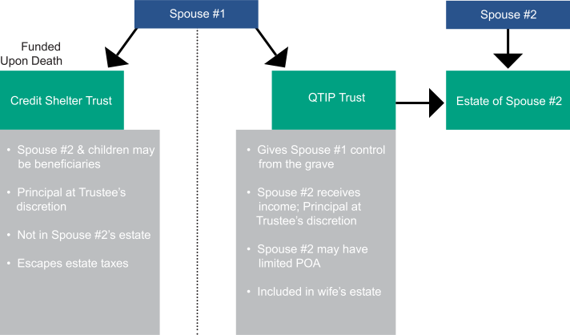

One problem with the General Power of Appointment Marital Trust is that it may leave too much power with the surviving spouse. For example, Mr. Dollar's desire for the assets to remain in trust for the benefit of the ill son could be defeated if Mr. Dollar died first and his surviving spouse exercised her power of appointment otherwise. While this may seem unlikely, it is conceivable that another family member might influence her to do exactly that. The fact is that there are many situations where a surviving spouse might alter the intent of a deceased spouse. For example, a surviving spouse might remarry, and there might be children involved from both marriages. The ultimate result might be that children unrelated to the deceased spouse would ultimately receive some or all of the assets left by the deceased spouse.
For reasons such as those mentioned, the QTIP (Qualified Terminable Interest Property) Marital Trust became increasingly popular.

A terminable interest in property is one that will terminate upon death. For example, if a person receives income from a trust during life, but at death the assets are distributed to other beneficiaries according to the terms of the trust, then that person has an interest that terminates upon their death. Such "terminable interests" are not ordinarily included in a person's estate. But as long as certain technicalities are met, a marital trust can be constructed with a terminable interest, yet be included in the surviving spouse's estate and thereby qualify for the marital deduction.
In other words, it is possible for John Dollar to plan for a marital trust that will direct the ultimate disposition of the assets to his children, prevent the surviving spouse from changing the distribution, and still qualify the trust for the marital deduction. That is truly control from the grave and accounts for the fact that such trusts continue to be popular today! That is why this continues to be a very popular planning technique today, especially in cases of second marriages.
Among the technicalities is the requirement that the surviving spouse must receive income from the trust. But unless the donor desires to give the surviving spouse a limited power of appointment (for example, limiting the ultimate distribution to the children, but allowing the surviving spouse to decide how it is to be prorated among them), it is the donor who will decide how the assets ultimately transfer, not the surviving spouse.